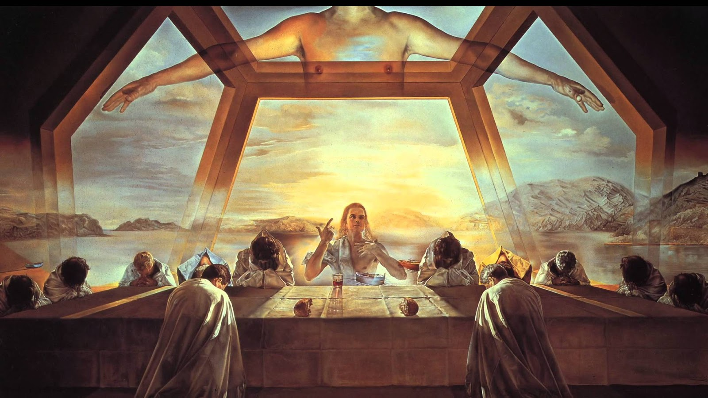
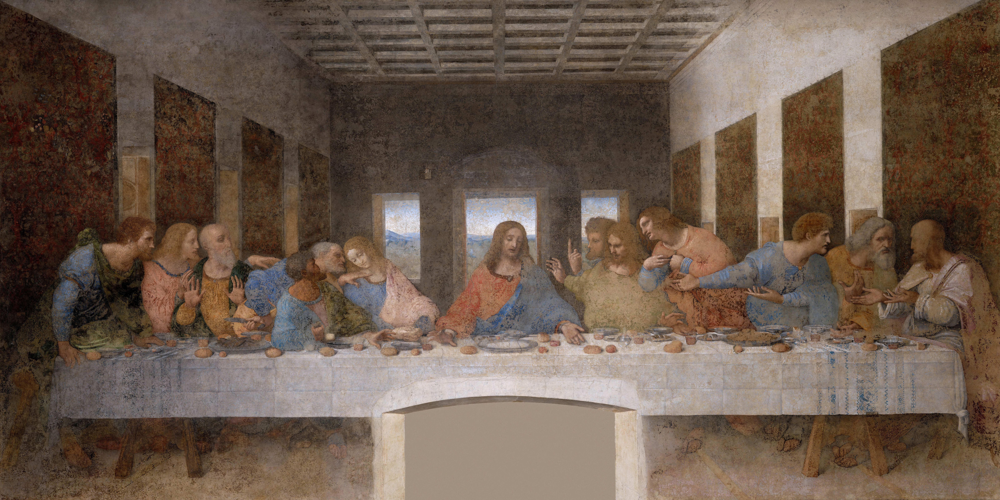
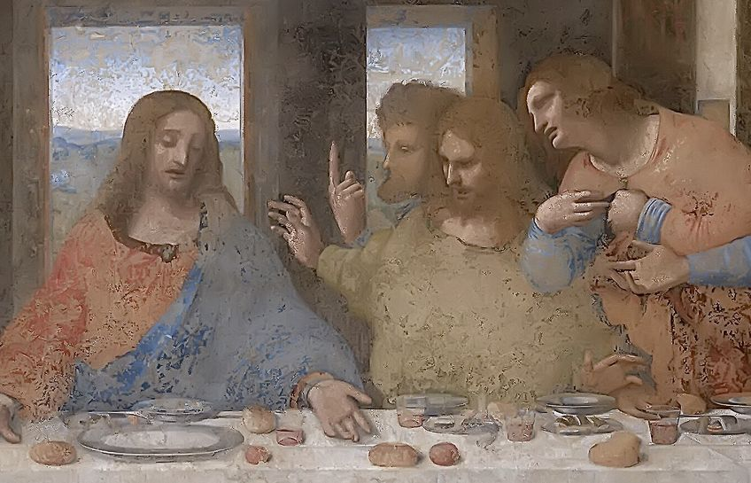
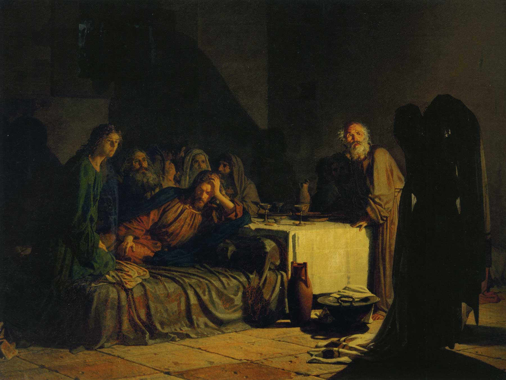
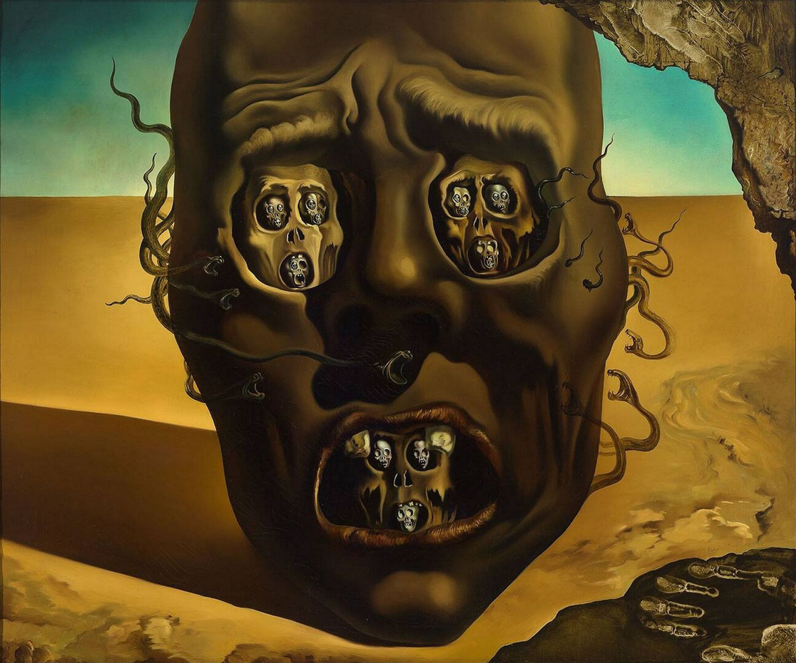

Capítulo 23
La profecía de Salvador Dalí
El pintor español Salvador Dalí tenía una excelente opinión de sí mismo… o fingía tener una excelente opinión de sí mismo. Decía: «El surrealismo soy yo».1 No, no puede decirse que el surrealismo sea él. Pero era un genial inventor, un tipo extravagante, extraordinario; había mucho de él, era espléndidamente extravagante y se esforzaba por no parecerse en nada a los demás, cosa que le salía a la perfección. Y al mismo tiempo precisamente Salvador Dalí, como ningún otro surrealista, estaba dolorosa, sensiblemente vinculado a su tiempo.
Cuando miramos los cuadros de los impresionistas, vemos cómo están vinculados al mundo, pero no cómo están vinculados, por ejemplo, a la guerra franco-prusiana. Y cuando vemos a un surrealista como Salvador Dalí, vemos cómo él, con toda su bufonería (y la bufonería era programática: él mismo decía que en la sociedad debe haber un bufón, refiriéndose, por supuesto, al bufón shakespiriano, que puede decir la verdad sin pestañear), está vinculado a todos los problemas actuales del mundo, a las nuevas teorías sobre el mundo y el hombre, a la cultura universal. Los impresionistas se alejaron del mito, y Dalí volvió de nuevo a él, porque el mito está vinculado al sueño, está vinculado al pensamiento arquetípico. Para Dalí el mito tiene una importancia enorme. Y le inquietaba todo lo que ocurría en el mundo: los ensayos atómicos, la Segunda Guerra Mundial…
En 1955 Salvador Dalí2, que en ese tiempo se ocupaba en serio de los problemas del cristianismo (y no simplemente del cristianismo, sino del significado de la religión en el mundo y de la situación histórica en la que se encuentra), pinta uno de sus cuadros principales: «La Última Cena». Es la última comida en la noche de Pascua, la comida de Cristo y de los doce discípulos elegidos por él, a los que llamó apóstoles. Salvador Dalí se apasionaba mucho por Leonardo da Vinci. Para él era muy importante el cuadro pintado por Leonardo en 1495–14983 y conservado hoy en el refectorio del monasterio de Santa Maria delle Grazie.


El día en que ocurren los acontecimientos representados en el cuadro era el día del sacrificio del cordero. Cristo es el cordero del sacrificio, y lo advierte a los discípulos. Y ellos entienden poco, como después se sabe. Lo único que entendieron fue que era una sentencia acusatoria, pues Él dijo: «Uno de vosotros me traicionará». ¿Qué hacen? Miremos el cuadro. Preguntan: «¿Soy yo, Señor?» Para Leonardo da Vinci, en la composición de este fresco es muy interesante la dinámica misma; recuerda a una piedra arrojada al agua: ¡pum!, cayó la piedra, se dispersan las ondas, una, otra, otra… Así también aquí: las palabras de Cristo, va una onda, tres discípulos a la derecha y a la izquierda, cesura, va la segunda onda… Pronunció esas palabras, y después viene la reacción psicológica. Leonardo muestra hasta qué punto el gesto es más veraz e instantáneo que la palabra: «¡Tú eres el traidor!» — «¿Yo?» — «¡No, yo no!» Reaccionan a esas palabras al instante, como si hubiera sonado un disparo, y la reacción a él. Es una investigación psicológica grandiosa, y aún más profunda: es el estudio de la unión de la reacción psíquica y el gesto. Y Leonardo no podía comprender de ningún modo (después se ocupó expresamente de este problema): de qué modo va la reacción del gesto y después la de la palabra. Pero la tarea es tal que incluso hoy no se sabe cómo resolverla.
Situación existencial, crítica, tajante, peligrosa, y su relación con ella. Entre todos los apóstoles hay uno, Tomás, que está en el grupo de la derecha.4 Tomás no responde, sino que pregunta. Levanta un dedo: es un gesto muy importante. Tomás pregunta: «¿Uno?» Sabemos qué ocurrió después, sabemos que los apóstoles se durmieron, aunque habían sido advertidos. Detengámonos en ese gesto: «¿uno?…». Lo recordaremos cuando volvamos al cuadro de Dalí.

Recordemos también el cuadro «La Última Cena», pintado por N.N. Ge en 1863. Fue mostrado en una exposición en la Academia de Bellas Artes. Ese cuadro provocó toda una tempestad en la sociedad rusa, nadie podía contenerse y no expresar su opinión sobre él. Es un asunto que no entra en la tradición religiosa rusa. En la tradición rusa de la pintura religiosa entran en lo fundamental los asuntos de las fiestas: la Anunciación, la Navidad, la Trinidad. Pero los temas dramatúrgicos negativos, como la traición, no entran en ella. Puede decirse que a mediados del siglo XIX N.N. Ge fue prácticamente el primero que escribió ese tema así.5 En Occidente es una tradición continua, no tienen cerrazón sobre ese tema: cualquier asunto del Antiguo y del Nuevo Testamento tiene derecho a ser representado. Para Occidente, mostrar a la Madre de Dios con los rasgos de la amada, la madre o la hija es cosa corriente. Cristo o los apóstoles también tienen prototipos. En Rusia, en cambio, es imposible que Cristo tenga un prototipo. Y en el cuadro de Ge Cristo tiene un prototipo: Herzen.6 En la figura del apóstol Pedro el pintor se pintó a sí mismo. Y la figura de Judas está pintada muy bellamente: oscura, frágil… Se ha cubierto con el talit. En el Evangelio de Juan Cristo dice que lo traicionará aquel a quien él, mojando, dé el pan. Y después se dice de Judas: «Él, tomando el bocado, salió en seguida; y era noche»7. Era de noche, y en la ventana vemos una luz verde fosforescente, una sombra casi incorpórea: el misterioso signo del mal que sale, el presagio de la desgracia. Y todos están agitados, y solo Él lo sabe… En el Evangelio de Mateo se dice: «Y Judas, el que le entregaba, respondiendo, dijo: ¿Soy yo, Maestro? Le dijo: Tú lo has dicho».

«La Última Cena», además de todo lo demás, tiene un aspecto místico. Mientras los apóstoles vociferaban: «¿Yo?… ¿No soy yo?…», Jesús partió el pan y, repartiéndolo, dijo: «esto es mi Cuerpo».
Y he aquí 1955, y Salvador Dalí. Veamos qué pintó. Pinta un cuadro muy cabalístico, hermético. Hay en él una simbología cifrada. Dalí pinta un cuadro en el que no se puede separar una cosa de otra: el espacio en el que están sentados los apóstoles, la gran mesa de piedra, la figura de Cristo, el paisaje que a todos los rodea. Es un paisaje asombroso, que Dalí pintaba siempre. Si se miran sus cuadros, puede verse que no pinta otro paisaje. Es el paisaje del lugar donde vivía cuando fue expulsado de la casa paterna, cuando se casó con su Gala. Ese lugar se llama Port Lligat.8 Dalí pinta siempre precisamente ese, no hay ni un solo cuadro suyo en el que tenga otro paisaje. Hay en él una cosmicidad del espacio aún no creado por el Padre y Creador, una cierta primariedad, un carácter originario.
Volvamos a la esencia de la cena en Leonardo o en Ge. Recordemos el dedo de Tomás, levantado hacia arriba: «¿El traidor es uno?» Salvador Dalí responde: «No, traidor es cada uno». Miremos a los apóstoles: cada uno de los sentados traicionó, y Pedro también. Son especulares: seis sentados a la derecha repiten a los seis sentados a la izquierda. Todos están sumidos en sí mismos, en su conciencia, en sus reflexiones.
Este cuadro tiene muchísimos subtextos, muchas interpretaciones. Empecemos por el hecho de que en el cristianismo primitivo, en el arte de las catacumbas, están presentes las imágenes de dos peces: el signo del zodíaco. Pueden verse en Roma, en el museo del cristianismo primitivo. Si ahora nuestro mundo ha pasado al signo de Acuario, en la época en que nació Cristo pasaba al signo de Piscis, y Cristo aparece con frecuencia representado en forma de pez. Incluso lo llamaban «ichthys», es decir, pez.9 En Dalí está representado como Cristo y como pez: «ichthys». Y también las barcas: las barcas están también vinculadas al tema de los apóstoles, pescadores, pescadores de almas. Y ni siquiera están tanto vinculadas al texto evangélico cuanto que crean una distancia espacial mística entre nosotros y el otro elemento, en el que Él se encuentra. Esas barcas hiperrealistas tras la mesa de piedra, flotando en el agua… Él está muy cerca y muy lejos; está aquí y no aquí.
Todo ese espacio está señalado por un cristal transparente pentagonal.10 Están sentados en un cristal transparente, y cada cara de ese cristal tiene cinco ángulos. Esos cinco ángulos no son en absoluto casuales: ese pentágono se llama pentagrama, o pentáculo. Es una construcción cristalina: un pentáculo compuesto de pentáculos. Y el pentáculo representa todos los elementos: tierra, agua, fuego, aire y éter: el ángulo superior. Ese cuerpo etéreo pende sobre nosotros. O puede describirse esa figura así: cuadrado más triángulo. El cuadrado es símbolo místico; sobre su base se construyó toda la arquitectura medieval, a él está vinculado el concepto de tierra. El triángulo es el concepto de resurrección, de éter. Ese pentáculo tiene además otra lectura, la más antigua, cuando a Cristo se le llamaba «ichthys»: Jesús Cristo, Hijo de Dios, Salvador. En la palabra «ichthys» hay cinco letras que se inscriben en el pentáculo. Y no es casual que Bulgákov llame a su héroe Yeshúa. Yeshúa es también un nombre temprano de Cristo, y también se inscribe en ese pentáculo. Dalí se apasionaba mucho por la numerología. Formas, símbolos, números: todo eso son características de la imagen. Y en el cuadro tenemos ante nosotros la imagen de ese cristal, de ese espacio místico, que es el «ichthys».
Eso es lo que entra en el tejido plástico del cuadro: todo él es como hiperreal, y al mismo tiempo flota, se desvanece. ¡Qué rígidos parecen esos travesaños, pero también ellos se desvanecen…! Un lugar muy grande ocupa en este cuadro el cielo. Está pintado de un modo sin par. Salvador Dalí escribe en sus memorias: «No sé qué es el cielo.11 El cielo arriba y abajo, está a la derecha y a la izquierda… No lo siento. No sé qué es el cielo. El cielo está en nosotros. Somos nosotros quienes contenemos el cielo en nosotros».
Así, vemos que cada uno de los elementos de la imagen creada en este cuadro tiene un sentido muy profundo.
Y aún otro sentido de «La Última Cena» de Dalí: es el tema de la traición, del conocimiento y de la inmersión en sí mismo. Después de la Segunda Guerra Mundial adquieren gran importancia las reflexiones sobre qué es la culpabilidad y la inocencia, qué es la elección, en qué mundo nuevo comenzamos a vivir. Para Salvador Dalí esas reflexiones son muy importantes. ¿Y qué conclusión saca cuando pinta «La Última Cena»? Salvador Dalí odia la guerra. Tiene un cuadro de 1940 en el que expresó por completo su odio a la guerra12: en el cuadro está representado un gran cráneo, y en sus cuencas y en su boca, otros cráneos. Para él la guerra es destrucción, y la odia. Pero no odia solo la guerra. Escribía: «Odio la guerra. Odio toda clase de ideologías colectivas13, gregarias: el nacionalsocialismo, el comunismo, el radicalismo. Todas son agresivas, arrojan a la sociedad a la Edad Media». Pero nosotros vivimos hoy precisamente como en la Edad Media: una fragmentación política infinita, una enorme cantidad de instituciones internacionales que intentan regular de algún modo esa fragmentación… Y lo más importante: la enemistad nacional y confesional. ¿Acaso no es la Edad Media? Y Dalí decía: «No importa, pasaremos por la Edad Media, creo que lo sobreviviremos y tras ello llegará de nuevo el Renacimiento. Y será una época de individualización». Y en el cuadro «La Última Cena» todo eso está presente.

Sobre Salvador Dalí se discute hasta hoy mucho. Pero este cuadro suyo, «La Última Cena», contiene un enunciado muy moderno y proféticamente optimista. Dalí se preocupaba mucho por el mundo en el que vive. Y todo lo colectivo le provocaba siempre aversión, pero estaba seguro de que sobreviviríamos a ello, de que tomaríamos conciencia de todas nuestras traiciones y saldríamos al grado más alto de la sociedad humana: a la sociedad de alta individualización, a la posibilidad de la manifestación personal.
Notas del editor
1. «Le surréalisme, c’est moi»: la frase se atribuye a Dalí tras su expulsión del grupo surrealista de André Breton en 1939.
2. «El sacramento de la Última Cena» (1955, National Gallery of Art, Washington). El índice de láminas del libro lo fecha por error en 1951; el pie de la imagen da la fecha correcta.
3. No es un fresco, aunque la autora lo llame así más abajo: Leonardo pintó al temple y óleo sobre una preparación seca del muro, lo que explica su rápido deterioro.
4. Tomás aparece a la izquierda de Cristo, en el grupo que para el espectador queda a la derecha, con el índice levantado, entre Santiago el Mayor y Felipe.
5. La Última Cena sí forma parte de la tradición religiosa rusa. Suele ocupar un lugar fijo en el iconostasio, sobre las Puertas Reales, en su variante eucarística (la Comunión de los apóstoles). Lo nuevo en Gue (o Ge, 1831–1894) es el tratamiento dramático, a la manera occidental, de la traición de Judas. El cuadro se expuso en la Academia de Bellas Artes en 1863 y fue comprado por Alejandro II.
6. La afirmación procede de la tradición crítica rusa: Gue, que conoció a Herzen en Florencia, se habría inspirado en una fotografía suya para la cabeza de Cristo. La crítica también ha visto un autorretrato del pintor en el apóstol Pedro. No hay documentación directa de ninguna de las dos cosas.
7. Juan 13, 30. La cita siguiente es Mateo 26, 25.
8. Dalí compró una barraca de pescadores en Portlligat (Cadaqués) en 1930, tras romper con su padre por su relación con Gala; se casaron por lo civil en 1934. El paisaje del cabo de Creus y de la bahía de Portlligat aparece en muchísimos de sus cuadros, pero no en todos.
9. Ἰχθύς es un acróstico griego: Ἰησοῦς Χριστὸς Θεοῦ Υἱὸς Σωτήρ, «Jesús Cristo, Hijo de Dios, Salvador». La relación con el signo zodiacal de Piscis es una especulación moderna. En el cuadro de Dalí no hay ningún pez: sobre la mesa se ve un torso de brazos abiertos, sin cabeza, que suele interpretarse como Dios Padre o el Cristo glorioso.
10. La estructura que envuelve la escena es un dodecaedro, el sólido de doce caras pentagonales que Platón asocia en el «Timeo» con el cosmos y que dibujó Leonardo para la «Divina proporción» de Luca Pacioli (1509). Un pentágono no es un pentagrama (la estrella de cinco puntas) ni un pentáculo.
11. No hemos podido localizar esta cita en «Vida secreta de Salvador Dalí» (1942) ni en el «Diario de un genio» (1964).
12. «El rostro de la guerra» (1940, Museo Boijmans Van Beuningen, Róterdam), pintado en California al final de la Guerra Civil española y al comienzo de la Segunda Guerra Mundial.
13. No hemos podido localizar esta cita. Conviene recordar que Dalí, tras regresar a España en 1948, se declaró públicamente partidario de Franco.